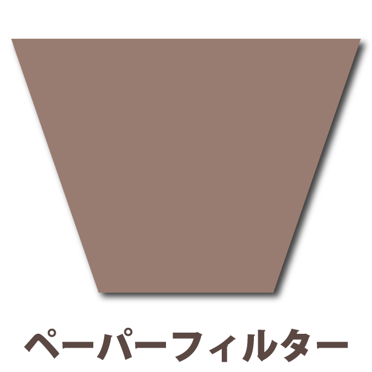

コーヒーマイスターが教える『美味しい煎れ方』
皆さんがご自宅でよく行う方法 ”ペーパードリップ” での美味しい煎れ方をご説明します
ペーパードリップは使い捨てなので、器具のお手入れもカンタンです！
豆が持つ個性をそのままストレートに抽出できる方法の一つです
おもてなしをしたい方には、コーヒーメーカーよりも”ペーパードリップ”で心を込めて、煎れてみませんか？
必要な器具

適した挽き豆の分量
カップ１杯分（約140cc）に対し、10g～12gが適量です。
使用する豆の銘柄や焙煎度はお好みで構いませんが、珈琲豆を直接挽いてもらうなら、「中細挽き」がいいですね。
※ 市販されているパッケージ商品の多くが「中細挽き」になっています。
準備が大切！
Step１ 必要な器具をそろえ、お湯を沸かします
飲み頃の温度で抽出するために、ドリッパーやサーバー、カップなどをあらかじめ温めておきます。
水は水道水などで構いませんが、水にもこだわる方は、「軟水」の「ミネラルナチュラルウォーター」で沸かしてもよいですね。
さて、お湯を沸騰させたら、いつドリップするか？ です。
いいタイミングは、表面の”ボコボコ”が鎮まった時ですね。温度が95°ぐらいになっていますので、ドリップには最適な温度です。
Step2 ペーパーフィルターをセットします
フィルターは底と側面のシール部分を、前後に互い違いに折り、ドリッパーに軽くおさえつけるようにしてぴったりとセットします。
美味しくなぁれ
Step１ 珈琲を蒸らします
おいしいコーヒーをいれるために必ずやってほしいのが、「蒸らし」です。
初めにコーヒーに少量のお湯を、そっと注ぎ、粉全体に均一にお湯を含ませてから、20秒ほどそのままにして蒸らします。
注ぐお湯の量は20cc程度。サーバーにポタポタとお湯が数滴落ちてくるのが目安です。
Step２ お湯を注ぎ、抽出します
1杯分を抽出するときに注ぐ湯量のめやすをご紹介していますが、サーバーについている「1杯分」の目盛りを見ながら注いでみても良いでしょう。
コツはここにありっ！
コーヒーの粉を平らにならした面と、ポットから注ぐお湯の角度が「90度」になるように注ぎましょう。
お湯は、中心で小さく「の」の字を書くように注ぎます。
さらに、慣れてきたら注ぐお湯の量と、サーバーに抽出されるコーヒーの量がつりあうように意識して注いでみてください。
コーヒーの粉を平らにならした面と、ポットから注ぐお湯の角度が「90度」になるように注ぎましょう。